mirador
User Manual
1. Introduction
Mirador is a software tool aimed at the visual exploration of complex datasets, with the ultimate goal of finding potential trends or correlations which can then be tested rigorously with more specialized statistical tools, and lead to new hypotheses. Although Mirador accepts any type of data as long as it is formatted correctly in a standard table format, it is specifically tailored to healthcare, epidemiological and infectious disease data.
2. Main Interface
The interface of Mirador consists of three main areas: the options panel on the left, the search and information bar on the top, and the variable browser occupying the rest of the screen. In the image below, the variable browser doesn't have a variable selected, so it shows default variable groups for the current dataset (in the database open in the figure, they are Demographics, Examination, Laboratory, and Questionnaire, Composites, and Weights):
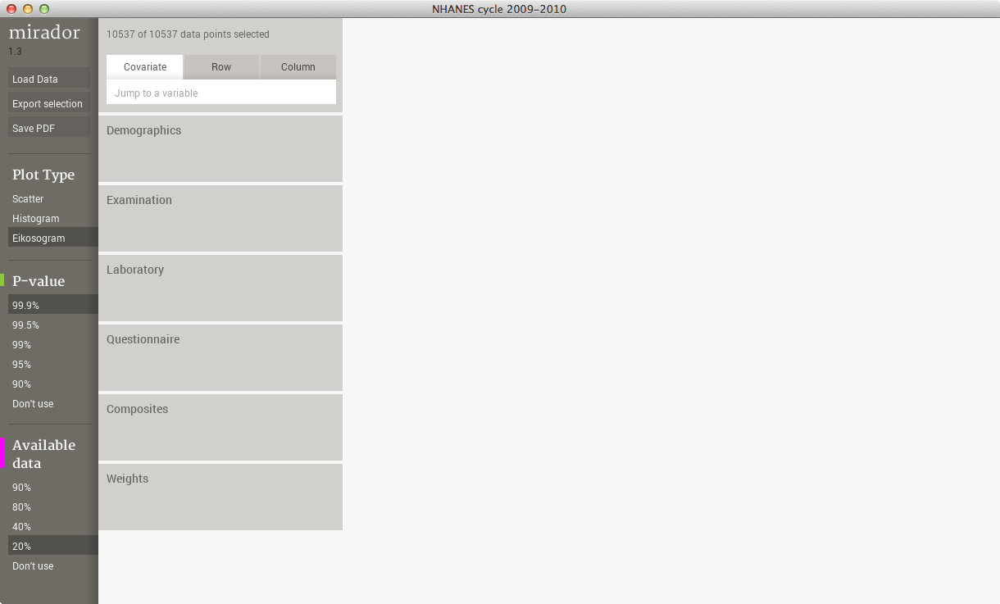The options panel is the location from where the user can load a dataset, export selected data, upload findings, and grab a screen capture of the entire Mirador window in pdf format. The options panel also contains some additional parameters (P-value and available data %). The search bar lets the user lookup variables by name, which is useful in large datasets where manual browsing can be difficult. It also displays the number of selected data points under the current variable ranges.
3. Loading data
Upon start up, Mirador will open a file selection window to allow the user to select a file for upload. To open a new dataset, you can use Load Data button in the options panel, which will bring another file selection window. This section of the manual explains in detail the file formats supported by Mirador.
4. Variable browser
4.1 Groups, tables and variables
The most important area of the Mirador UI is the variable browser. This browser arranges variables on a two dimensional grid, where the position (i, j) shows a plot representing the data for variables i and j only. In the previous image, the variable browser was in the closed state, showing only top-level groups of variables. Mirador is able to organize the variables hierarchically, by first defining groups that contain tables. Tables, in turn, contain a subset of related variables. Clicking on a group in the variable browser will display all the tables within that group, and clicking on a table will display all the variables within the table:

The user can scroll up and down through the list of groups, tables and variables simply by dragging the mouse on the screen. Clicking on any open element group or table will advance the user forward.
However, this hierarchical arrangement of variables is optional, and loading a dataset from a stand-alone table will result in all the variables being displayed in the first level of the scroll list.
4.2 Plots
Once the variable level is reached in the scroll list, all the plots comparing it with the rest of the variables in the dataset will be shown to the right of the variable browser:
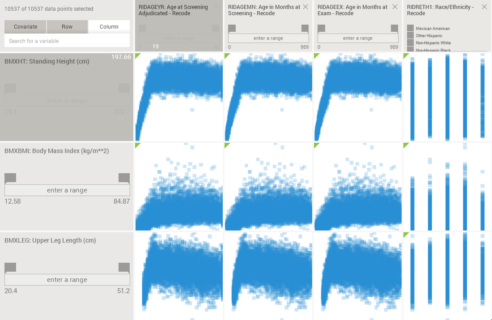The user can scroll through the plots from left to right by dragging them. By default, all the variables in the dataset will be used as columns, but variables can be removed from the columns by clicking on the “column” checkbox that appears in the group, table or variable boxes when hovering with the mouse. Unchecking a variable will result in the removal of that variable from the column, but unchecking a whole table will remove all the variables inside that table from the columns:

4.3 Searching variables
The search box in the top bar allows search variables along the rows or the columns, as well as open covariates (more about covariates in section 4.5).
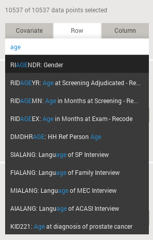Variables in a dataset can have two names: a short, abbreviated name, and a long, descriptive name. For example: AGE and “Age at admission” could be the short and long names for a given variable. The search functionality will look for matches between the string typed in the box with the short or long names. The matching variable names will be displayed in a list that the user can select. This list can also be navigated with the UP and DOWN arrow keys, and the RETURN/ENTER to select.
After selecting an entry from the result list, Mirador will jump to either the column or row that corresponds to the selection, depending on which search tab (covariate, row, or column) is currently highlighted. If the covariate tab is highlighted, Mirador will open the covariate box for the selected variable at the bottom of the browser.
4.4 Ranges
If the user needs to look at a subset of data, for example a specific age range, or patients with cholesterol higher than a given threshold, or all males in the sample, range selections can be made in row, column, or covariate boxes. There are two types of range selectors, one for numerical variables, and the other for categorical variables. The numerical range selectors specify the minimum and maximum values defining the range:
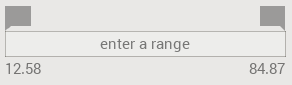The numerical ranges can be set by either dragging the handles on top:
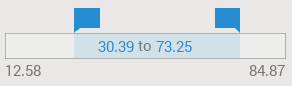or directly typing the values with the keyboard. To do so, simply click anywhere inside the range bar and use the TAB key to switch back and forth between the minimum and maximum values:
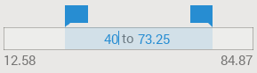The range selectors for categorical variables will take the form of a scrollable list of checkboxes, where the status of each checkbox indicates whether or not the value is included in the range:

Long-pressing of a checkbox will result in all the other checkboxes becoming unchecked/checked depending on the status of the checkbox receiving the long-press. This behavior can be useful to quickly switch and compare between two categories, or one category can be compared to all the rest.
The information bar at the top of the window will update the number of selected data points. A “Reset” button also appears next to the counts.

Note that several ranges can be specified simultaneously. This results in Mirador using for visualization and calculation only the data points that fulfill all the range conditions at once.
4.5 Covariates
Sometimes it is necessary to use specific variables to control the data by setting subpopulations. This can be done with the functionality described in the previous section, but that would require the user to locate the variable of interest every time and set the appropriate range. Setting variables as covariates will result in the appearance of a small box at the bottom of the screen. These covariate boxes are always visible, irrespective of the current selection in the browser. The box allows for the quick setting of ranges and as a result plots update accordingly:
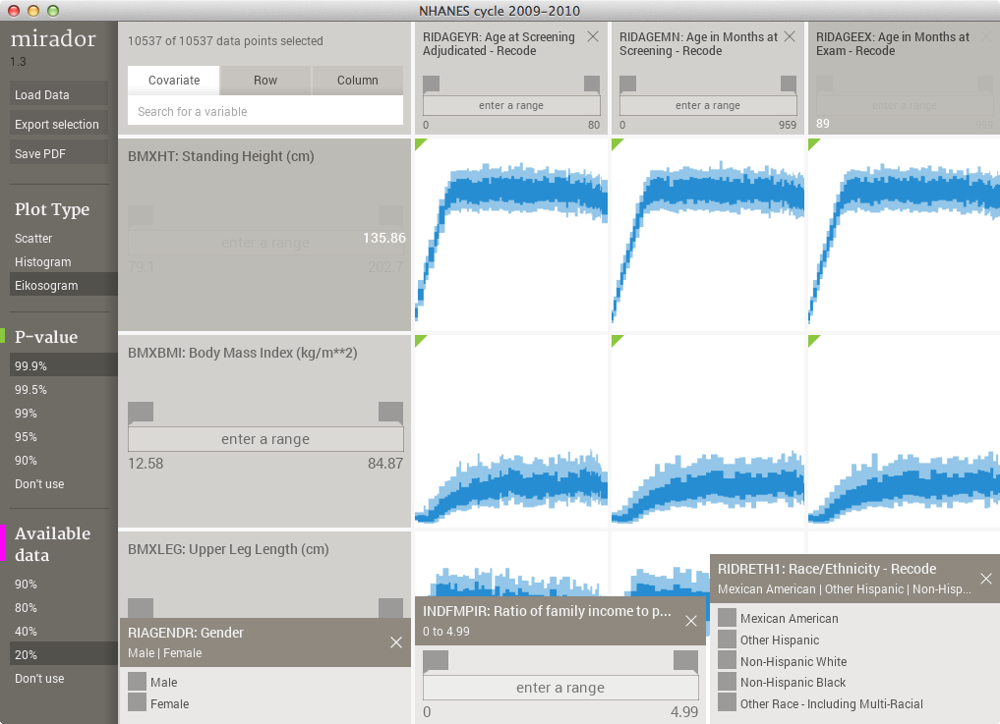4.6 Correlation sorting
By default, the columns are arranged following the same order as the rows, which reflect the original ordering of the input data. However, one might be interested to know, given one variable, which variables have the strongest statistical association with it. Although it is possible to visually inspect each plot and scroll through the columns until the user finds the plots that show possible strong associations, this process would be only possible with datasets with a small number of variables.
Mirador incorporates a functionality that allows to re-order all the columns, by ranking by their correlation with the variable in a specific row. The correlation is measured by a similarity score based on a Mutual Information estimate between each pair of variables, which ranges between 1 (when the variables are identical) to 0 (for completely unrelated variables). The sorting can be done by clicking on the name of the variable in its row box:
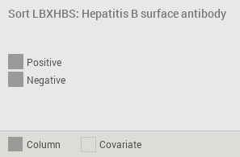The sort operation can take up to several minutes if the dataset is very large, but it can be cancelled at anytime by simply clicking on the title again. The rest of the UI can still be used normally while the sorting calculation is carried out in the background.
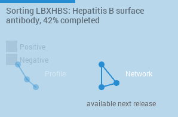Once the sorting is completed, the columns will be arranged from maximum to minimum scores. As a consequence, scrolling the columns to the right will show variables with progressively weaker associations. To return to the original ordering, one can click the variable name again.
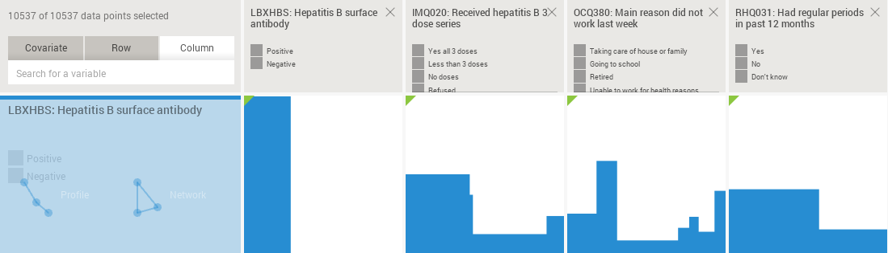4.7 Test of significance
Mirador automatically performs a test of statistical independence for each plot that is visible to the user. If the null hypothesis (variables in the plot being independent) is rejected at the selected P-value threshold (set in the options panel), then a small green triangle will be displayed on the upper left corner of the plot:

4.8 Missing values
As mentioned at the beginning, Mirador applies pairwise deletion of records with missing values when generating each plot. Plots where too many records have been discarded in this way can be visually flagged by setting the desired threshold of available data using the options panel. Plots with less available data than the threshold will display a small magenta triangle on the upper right corner:
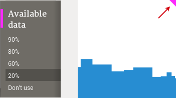5. Plot types
Mirador displays the data for each pair of variables using three different plot types: scatter, histogram, and eikosogram.
The scatter plot is the most straightforward representation of the data. For numerical, continuous variables, each circle simply stands for a single data instance. However, in the case of discrete variables (numerical integer or categorical), the area of the circles are scaled proportional to the total count of points falling into that value.
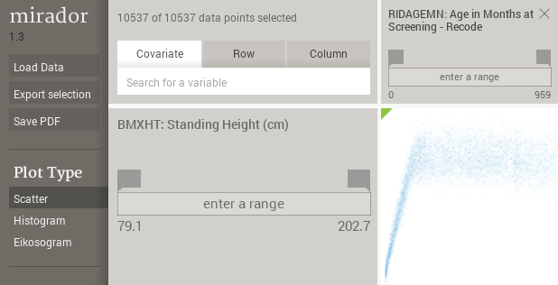The histogram plot is a 2D representation of the joint probability distribution, where the histogram bins are computed using the optimal-bin size algorithm proposed by Shimazaki and Shinomoto.
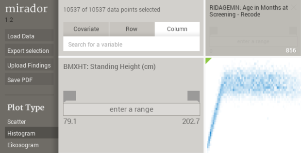The eikosogram is a plot where the width of each horizontal bin reflects the proportion of that bin in the data, and the vertical heights are proportional to the conditional probabilities of the Y (row) variable given the X (column) variable. It is particularly well suited to depict associations between categorical variables.
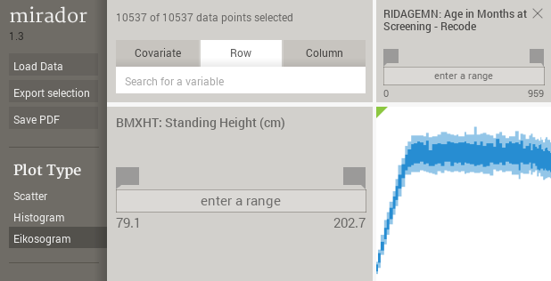 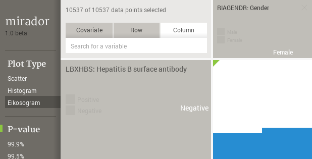 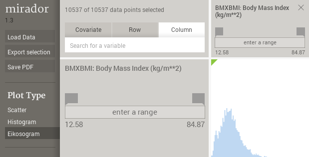6. Profile view
As mentioned previously, one can sort the columns according to their similarity score with a chosen row. Once the sorting is completed, a new view is available to help navigate, select, and export the results of the sorting. This view is a profile that represents each variable as a point where its height is proportional to the magnitude of the score. Only the variables that pass the test of statistical significance for their association with the row variable are used to construct the profile. When the users clicks on a variable in the profile, Mirador will open the corresponding plot in the variable browser. By dragging the handles in the bottom of the profile, one can define a range of selected variables. This range is used to save the corresponding data into a separate table file when pressing the export selection button.
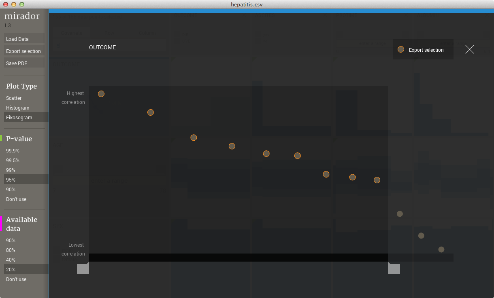